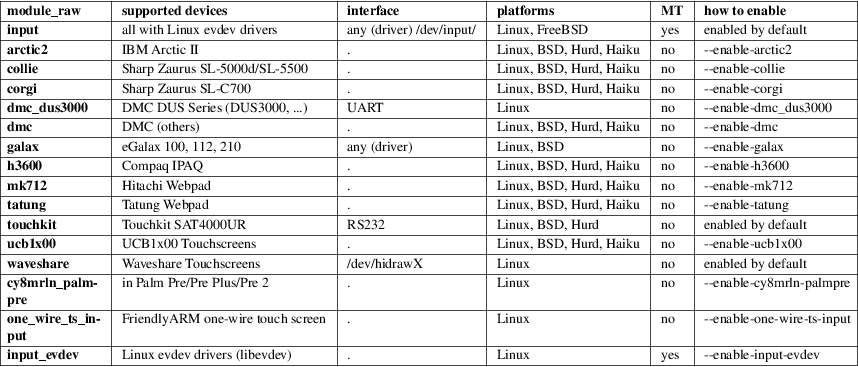

ts.conf − Configuration file for tslib, controlling touch screens for embedded devices.
The idea of tslib is to have a core library that provides standard services, and a set of plugins to manage the conversion and filtering as needed.
The plugins for a particular touchscreen are loaded automatically by the library under the control of a static configuration file, /etc/ts.conf. /etc/ts.conf gives the library basic configuration information. Each line specifies one module, and the parameters for that module. The modules are loaded in order, with the first one processing the touchscreen data first. For example:
module_raw
input
module variance delta=30
module dejitter delta=100
module linear
Latest versions of the Xorg tslib input driver use hal to configure the touchscreen within Xorg. Environment variables are only needed for the tslib commands.
TSLIB_TSDEVICE
If the default touchscreen device cannot be found, set the TSLIB_TSDEVICE environment variable to the touchscreen device to use.
Default when using ts_setup(): We try to open /dev/input/ts, /dev/input/touchscreen and /dev/touchscreen/ucb1x00 and on Linux, we then scan /dev/input/event* for the first device with property INPUT_PROP_DIRECT.
TSLIB_CONSOLEDEVICE
Tslib default console device.
Default: /dev/tty
TSLIB_CALIBFILE
Stores calibration data obtained using ts_calibrate.
Default: /etc/pointercal
TSLIB_CONFFILE
Set a different location for the ts.conf configuration file itself.
Default; /etc/ts.conf.
TSLIB_FBDEVICE
Framebuffer device to use for the touchscreen support.
Default: /dev/fb0.
TSLIB_PLUGINDIR
Plugin directory for tslib.
Default: /usr/lib/$triplet/ts0/ where triplet is the MultiArch path, e.g. arm−linux−gnueabi.
dejitter
Removes jitter on the X and Y co−ordinates. This is achieved by applying a weighted smoothing filter. The latest samples have most weight; earlier samples have less weight. This allows one to achieve 1:1 input−>output rate.
• delta
Squared distance between two samples ((X2−X1)^2 + (Y2−Y1)^2) that defines the quick motion threshold. If the pen moves quick, it is not feasible to smooth pen motion, besides quick motion is not precise anyway; so if quick motion is detected the module just discards the backlog and simply copies input to output.
linear
Linear scaling module, primarily used for conversion of touch screen co−ordinates to screen co−ordinates.
• rot
Rotation of touch coorinates. 0=no, 1=CW, 2=UD, 3=CCW. Default: the screen-rotation that was used with ts_calibrate (-r option).
• xyswap
Interchange the X and Y co−ordinates −− no longer used or needed if the new linear calibration utility ts_calibrate is used.
• pressure_offset
Offset applied to the pressure value. Default: 0.
• pressure_mul
Factor to multiply the pressure value with. Default: 1.
• pressure_div
Value to divide the pressure value by. Default: 1.
iir
Infinite impulse response filter. Similar to dejitter, this is a smoothing filter to remove low−level noise. There is a trade-off between noise removal (smoothing) and responsiveness. The parameters N and D specify the level of smoothing in the form of a fraction (N/D).
• N
numerator of the smoothing fraction. Default: 0.
• D
denominator of the smoothing fraction. Default: 1.
pthres
Pressure threshold filter. Given a release is always pressure 0 and a press is always >= 1, this discards samples below / above the specified pressure threshold.
• pmin
Minimum pressure value for a sample to be valid. Default: 1.
• pmax
Maximum pressure value for a sample to be valid. Default: INT_MAX.
debounce
Simple debounce mechanism that drops input events for the specified time after a touch gesture stopped.
• drop_threshold
drop events up to this number of milliseconds after the last release event. Default: 0.
skip
Skip nhead samples after press and ntail samples before release. This should help if for the device the first or last samples are unreliable.
• nhead
Number of events to drop after pressure. Default: 1.
• ntail
Number of events to drop before release. Default: 1.
median
Similar to what the variance filter does, the median filter suppresses spikes in the gesture.
• depth
Number of samples to apply the median filter to. Default: 3.
invert
Invert values in X and/or Y direction around a given value.
• x0
X-axis (horizontal) value around which to invert. Default: 0.
• y0
Y-axis (horizontal) value around which to invert. Default: 0.
lowpass
simple exponential averaging lowpass filter
• factor
floating point values betwenn 0 and 1. Default: 0.4.
• threshold
x or y minimum distance between two samples to start applying the filter. Default: 2.
evthres
Number of samples needed from the device after considered a valid touch. This filter will drop a tapping when too little samples are between "down" and "up".
• N
Minimum number of events needed between "down" and "up". Default: 5.
variance
Tries to do it’s best in order to filter out random noise coming from touchscreen ADCs. This is achieved by limiting the sample movement speed to some value (e.g. the pen is not supposed to move quicker than some threshold).
This is a greedy filter, e.g. it gives less samples on output than receives on input. There is no multitouch support for this filter.
• delta
Set the squared distance in touchscreen units between previous and current pen position (e.g. (X2−X1)^2 + (Y2−Y1)^2). This defines the criteria for determining whenever two samples are near or far to each other.
If the distance between previous and current sample is far, the sample is marked as potential noise. This doesn’t mean yet that it will be discarded; if the next reading will be close to it, this will be considered just a regular quick motion event, and it will sneak to the next layer. Also, if the sample after the potential noise is far from both previously discussed samples, this is also considered a quick motion event and the sample sneaks into the output stream.
hardware support
On Linux, use the module_raw input if you can. The other raw access modules are device specific userspace drivers. If you need one of those, enable it explicitly when building tslib. The list of modules enabled by default might shrink in the future. module_raw input supports multitouch (MT) too.

ts_calibrate(1), ts_test(1), ts_test_mt(1)